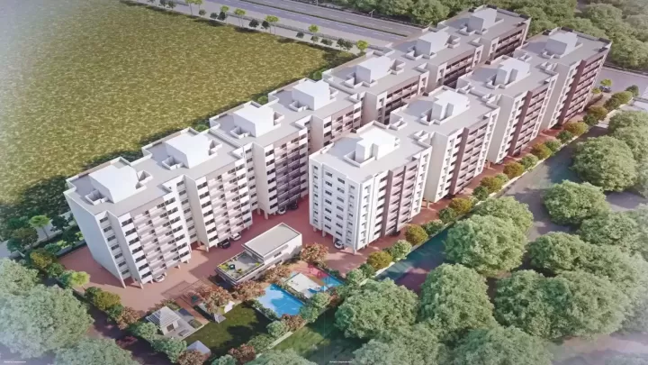

More about Ashoka Valley of Flowers
Keeping in mind with the need and desire of today's home seekers, Valley of Flowers is meticulously planned so that you can enjoy the experience of belonging to a new community and a new lifestyle. Residents can feel touch of luxury in every corner, a place where style meets passion that takes you to a new dimension of refined living. The project is dotted with manicured green spaces with a large scenic gardens that creates an ambiance to rejuvenate your mind and soul.
More about Pacific Prabhu Swaraj
Keeping in mind with the need and desire of today's home seekers, Valley of Flowers is meticulously planned so that you can enjoy the experience of belonging to a new community and a new lifestyle. Residents can feel touch of luxury in every corner, a place where style meets passion that takes you to a new dimension of refined living. The project is dotted with manicured green spaces with a large scenic gardens that creates an ambiance to rejuvenate your mind and soul.

More about Shilpa Anandvan
Keeping in mind with the need and desire of today's home seekers, Valley of Flowers is meticulously planned so that you can enjoy the experience of belonging to a new community and a new lifestyle. Residents can feel touch of luxury in every corner, a place where style meets passion that takes you to a new dimension of refined living. The project is dotted with manicured green spaces with a large scenic gardens that creates an ambiance to rejuvenate your mind and soul.
